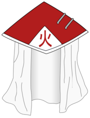

O Hokage (火影; Literalmente significa "Sombra do Fogo") é o líder de Konohagakure. Eles são geralmente reconhecidos como o mais forte na aldeia, embora a ideologia e renome desempenha um grande papel em ter sido escolhido para a posição. Seis shinobi e uma kunoichi ganharam esse título até o momento.
O título e o papel foi criado por Hashirama Senju logo após o estabelecimento de Konoha. Geralmente, o novo Hokage é selecionado pelo atual Hokage no momento de sua aposentadoria, mas se o ex-Hokage morrer ou estiver incapacitado antes de ser capaz de fazê-lo, o daimyō do Fogo vai nomear um candidato Hokage, mediante da recomendação do Conselho de Konoha e os conselheiros do daimyō do Fogo. Depois, o candidato terá de ser aprovado pelos jōnin da aldeia para se tornar oficialmente Hokage. Depois de ser aprovado, eles se mudam para a Residência do Hokage para viver e ter seu rosto esculpido no monumento por trás dele. Se o ex-Hokage ainda estiver vivo, eles geralmente continuam a ajudar, fazendo a transição mais fácil e mais estável. O Hokage leva o título por toda a vida, mesmo depois de se aposentar do serviço ativo. O escritório do Hokage está localizado no setor administrativo da Academia.
Hashirama Senju (千手柱间, Senju Hashirama) foi um ninja lendário que veio do clã Senju que, juntamente com o clã Uchiha, fundou a vila shinobi de Konohagakure. Ele mais tarde viria a se tornar o Primeiro Hokage (初代火影, Shodai Hokage, literalmente significa: "Fundador ou Primeira Sombra do Fogo")
Tobirama Senju (千手扉间, Senju Tobirama) foi o Segundo Hokage (二代目火影, Nidaime Hokage, literalmente significa: "Segunda Sombra do Fogo") de Konohagakure. Ele vem do clã Senju, que, junto com o clã Uchiha, fundou a primeira vila shinobi: Konoha. Durante o seu reinado, Tobirama foi credenciado como o Hokage que desenvolveu o sistema organizacional da vila, bem como alguns de sua infraestrutura.
Hiruzen Sarutobi (猿 飛 ヒルゼン, Sarutobi Hiruzen), foi o Terceiro Hokage (三代目火影, Sandaime Hokage, literalmente significa: "Terceira Sombra do Fogo") que veio do clã Sarutobi de Konohagakure. Ele fazia parte do Time Tobirama, ao lado de Homura Mitokado e Koharu Utatane sob a liderança do Segundo Hokage. Ele também foi treinado pelo Primeiro Hokage e mais tarde se tornaria o professor dos Sannin: Tsunade, Jiraiya e Orochimaru e o terceiro homem para conter o título de Deus dos Shinobi (忍の神, Shinobi no Kami).
Minato Namikaze (波風ミナト, Namikaze Minato), conhecido como o Relâmpago Amarelo de Konoha (木ノ葉の黄色い閃光, Konoha no Kiiroi Senkō; Literalmente "Relâmpago Amarelo da Folha"), era um shinobi lendário que se tornou o Quarto Hokage (四代目火影, Yondaime Hokage, literalmente significa: "Quarta Sombra do Fogo") de Konohagakure. Foi treinado pelo Sannin Jiraiya e mais tarde se tornou o professor de Obito Uchiha, Rin Nohara e Kakashi Hatake, sendo que este último veio a se tornar o Sexto Hokage. Minato também é pai do Sétimo Hokage.
Tsunade (纲手, Tsunade) é a Quinta Hokage (五代目火影, Godaime Hokage, literalmente significa: "Quinta Sombra do Fogo") de Konohagakure - uma posição que ela conseguiu, após a morte de seu mestre, Hiruzen Sarutobi, e um personagem importante de apoio para a série. Ela vem do clã Senju da aldeia, e é também uma descendente do clã Uzumaki através de sua avó, Mito. Junto com os seus ex-companheiros de equipe Jiraiya e Orochimaru, ela é reconhecida como um dos "Três Shinobi Lendário" (伝説の三忍, Densetsu no Sannin). Tsunade é considerada a mais forte kunoichi no mundo, e é comemorada como a maior ninja médica de todos os tempos, creditado com a criação do sistema oficial de médico-nin.
Kakashi Hatake (はたけカカシ, Hatake Kakashi) é um jōnin de Konohagakure. Ele recebeu um Sharingan de seu ex-companheiro de equipe, Obito Uchiha, quando era mais jovem, fazendo-o ser conhecido como Kakashi o Ninja Copiador (コピー忍者のカカシ, Kopī Ninja no Kakashi) e Kakashi do Sharingan (写輪眼のカカシ, Sharingan no Kakashi). Apesar do seu talento prodigioso e habilidades que o faziam ser um dos shinobi mais capazes da aldeia, o Sharingan concedeu a Kakashi o reconhecimento mundial. Ele acaba sendo nomeado como líder do Time 7, onde ele usa seus anos de experiência para treinar seus alunos para se tornarem ninjas talentosos de suas maneiras. Depois da batalha contra Kaguya Ōtsutsuki, ele se tornou o Sexto Hokage (六代目火影, Rokudaime Hokage, literalmente significa "Sexta Sombra do Fogo") de Konohagakure
Naruto Uzumaki (うずまきナルト, Uzumaki Naruto) é um shinobi de Konohagakure, a reencarnação atual de Asura e o protagonista homônimo da franquia Naruto. Ele se tornou o jinchūriki de Kurama no dia de seu nascimento, um destino que o levou a ser condenado ao ostracismo e ser negligenciado por toda a aldeia durante toda a sua infância. Depois de entrar para o Time Kakashi, Naruto trabalhou duro para ganhar o respeito e o reconhecimento da aldeia, com o eventual sonho de se tornar Hokage. Nos anos seguintes, Naruto torna-se um ninja capaz, que é eventualmente considerado como um herói, tanto por parte dos moradores como o mundo shinobi em geral. O objetivo de Naruto em se tornar Hokage foi deixado de lado, devido a ele querer salvar o seu melhor amigo e companheiro de equipe, Sasuke Uchiha, que sucumbiu ao ódio e à escuridão, eventualmente Naruto consegue cumprir esse objetivo após derrotá-lo em sua batalha final. Anos depois da Quarta Guerra Mundial Shinobi, Naruto realiza seu sonho e se torna o Sétimo Hokage (七代目火影, Nanadaime Hokage, literalmente significa: "Sétima Sombra do Fogo"), enquanto também se casa com Hinata Hyūga e tem dois filhos com ela, Boruto Uzumaki e Himawari Uzumaki.